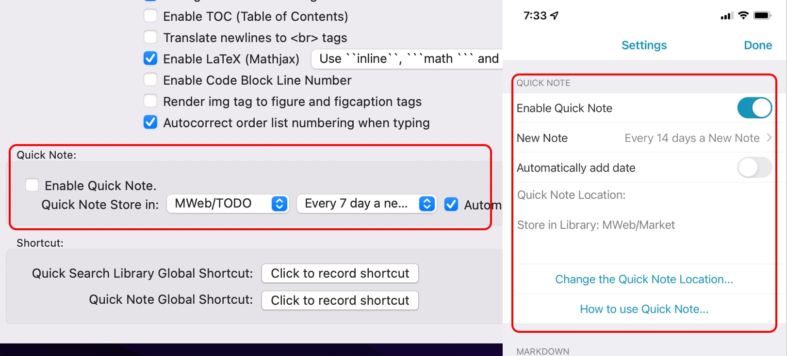
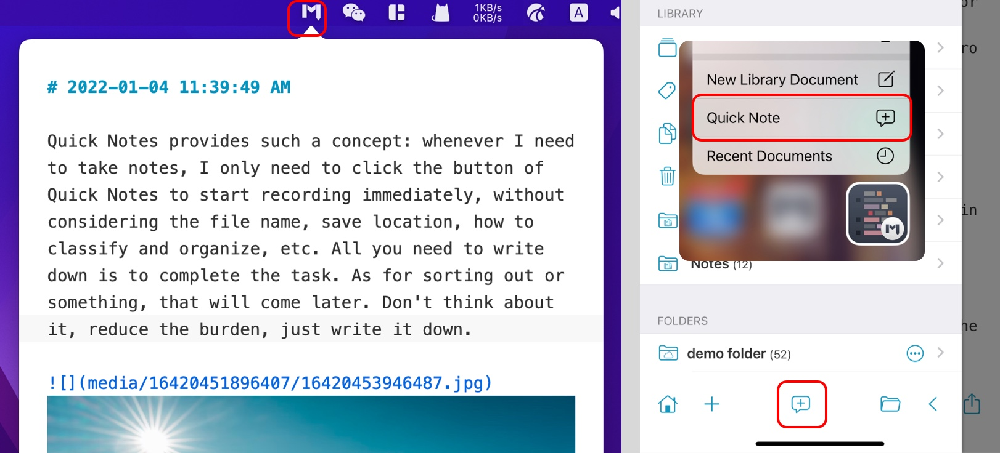

Quick Notes provides such a concept: whenever I need to take notes, I only need to click the button of Quick Notes to start recording immediately, without considering the file name, save location, how to classify and organize, etc. All you need to write down is to complete the task. As for sorting out or something, that will come later. Don't think about it, reduce the burden, just write it down.
The quick note feature is essentially to add documents according to a certain period of time (days) and save them to the set category of the Library or folder (only supported by iPadOS/iOS). Mainly to achieve, when you want to record text or images, you only need to click a button to start immediately.
Enable quick note feature
This feature is disabled by default. If you want to enable it, in MWeb for macOS, please enable it in Preferences - General; in MWeb for iPadOS/iOS, please enable it in Settings Page - Quick Note. The following figure shows the settings interface in macOS and iOS respectively.

You can set the time when quick notes are saved in that category and generate a new document. If you use it frequently, you can only write one a day. Otherwise, you can choose 3, 5, 7 days, etc. Among them, there is a check box of Automatically insert time. If it is checked, it will automatically add a line of current time as the title when recording a quick note.
Use quick note feature
In the macOS version of MWeb, if Quick Notes is enabled, a button with an "M" icon will be displayed in the status bar. After clicking, Quick Notes can be used, as shown on the left side of the following figure; in the iPadOS/iOS version of MWeb , if MWeb is not open, you can press and hold the MWeb icon and select "Quick Note" to use Quick Notes. If MWeb is open, you can directly press the button in the middle of the bottom of the navigation page to use Quick Notes, as shown in the red box on the right side of the figure below.
